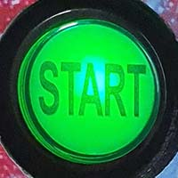
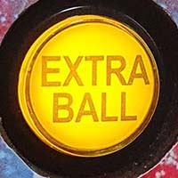
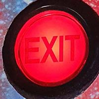
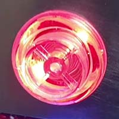
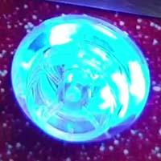
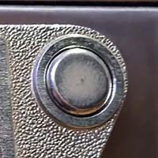

Jeugdhuis Tronk
Flipperkast
De naam van de flipperkast, Vortex Virtual Pinball, verraadt al dat dit een virtuele (of digitale) flipperkast is. Een traditioneel speelveld met rollende ballen en allerlei mechanismes wordt hierbij vervangen door een groot 4K scherm. Dankzij dit scherm kunnen replica's gespeeld worden van echte flipperkasten. Het grote voordeel hiervan is dat er in plaats van één dure flipperkast zo goed als oneindig veel kasten gespeeld kunnen worden.
De kast zit ook propvol met extra feedback devices om de ervaring zo echt mogelijk te maken. Er zitten bijvoorbeeld echte flippermechanismes in die activeren wanneer je op de flipperknoppen drukt. Zo voelt het alsof je echte flippers bedient. Verder zijn er ook flitsende lichten die gesynchroniseerd zijn met het spel en kan de kast mechanische geluiden afspelen, eender waar op het speelveld.
De realistische speelervaring van Vortex is onmogelijk over te brengen zonder het zelf te ervaren, dus kom vooral zelf eens spelen!
Competitie
Ga de strijd aan om de titel van beste flipperkast speler te veroveren! Maandelijks wordt er een flipperkast gekozen om competitief te spelen. Iedereen kan deelnemen en op het einde van de maand wordt de speler met de hoogste score tot winnaar gekroond.
Check het online scorebord voor een actueel overzicht van flipperkasten, spelers en hun topscores.
Vortex competitie scorebord →Deelnemen
Iedereen kan gratis deelnemen aan de competitie, je betaalt enkel de gespeelde spelletjes.
Deelnemen kan door een spel te spelen op de flipperkast van de maand en een foto te maken van je score. De foto en score moeten gepost worden in de Jeugdhuis Tronk Discord server. De score wordt automatisch verwerkt en toegevoegd aan het online scorebord.
Wordt lid van de Tronk Discord →Handleiding
Zowat alles wat je moet weten om de flipperkast te bedienen kan je terugvinden op de instructiekaart in de flipperkast zelf, links vooraan onder het glas.
Hieronder staat alles echter uitgebreid uitgelegd met ook wat extra functionaliteit die niet op het kaartje staat.
Knoppen
| Knop | Actie | Uitleg |
|---|---|---|
|  | Spel starten | Geselecteerde kast laden of in-game het spel starten. |
|  | Extra bal starten | Bij sommige flipperkasten kan er een extra bal gespeeld worden na de gewoonlijke 3 ballen (tegen betaling). |
|  | Terug navigeren | Navigeert in het menu naar een niveau hoger of sluit in-game het spel af om terug te keren naar het menu. |
|  | Navigeren / flipperen | De bovenste van de twee knoppen aan de zijkant van de flipperkast. Navigeert in het menu of activeert een van de flippers in-game. |
|  | Instructies lezen / magnasave links | De onderste van de twee knoppen aan de zijkant van de flipperkast. Opent de instructies van de geselecteerde flipperkast in het menu of werkt als extra knop in-game als de kast het ondersteund. |
| Flyer bekijken / magnasave rechts | De onderste van de twee knoppen aan de zijkant van de flipperkast. Toont de originele reclameflyer van de flipperkast in het menu of werkt als extra knop in-game als de kast het ondersteund. | |
|  | Volume | Houdt de knop ingedrukt en gebruik de rechter flipper- en magnasave knop om het volume in te stellen. |
| Witte knop aan de onderkant vooraan | Kast aan en uit zetten | Altijd 1x kort indrukken en de tijd geven om op te starten of af te sluiten |
| Plunger | Bal in het spel schieten | Afhankelijk van hoe ver de plunger getrokken wordt schiet de bal harder of zachter weg. Sommige flipperkasten hadden geen plunger, hier wordt de bal altijd even hard weggeschoten. |
Tips & tricks
Geen idee wat je moet doen bij een bepaalde flipperkast? Druk in het menu op de linker magnasave knop om de instructies te lezen. Daarin staat altijd welke doelen er zijn in het spel. Dit helpt je meestal goed op weg.
Je kan de flipperkast (lichtjes) naar links of rechts duwen om de bal te manipuleren op het speelveld.
Schudt nooit te hard met de flipperkast. Er zit namelijk een mechanisme in dat dit detecteert en het spel laat stilvallen.
Eenmaal een flipperkast geladen is lichten de flipper- en magnasave knoppen op in de kleur van de originele flipperkast. Dit is niet alleen een leuke extra, maar ook handig om te weten of de flipperkast 2, 3 of 4 knoppen gebruikt.
Nog eens herhalen: nooit munten inwerpen als je nog in het menu of laadscherm zit. Die inworp wordt nog niet herkend door de flipperkast en zal dus verloren gaan.
Sommige flipperkasten hadden geen plunger maar een "Launch Ball" knop. Deze knop werd soms tijdens het spel gebruikt voor bepaalde acties. Bij Terminator 2 kan je bijvoorbeeld het kanon afschieten door op de plunger te duwen.
Zet nooit drank op de flipperkast. Dit kan het glas beschadigen of nog ergere schade als er gemorst wordt.
Is er een probleem of iets vreemd met de flipperkast? Laat meteen iets weten aan de tapper of het bestuur!